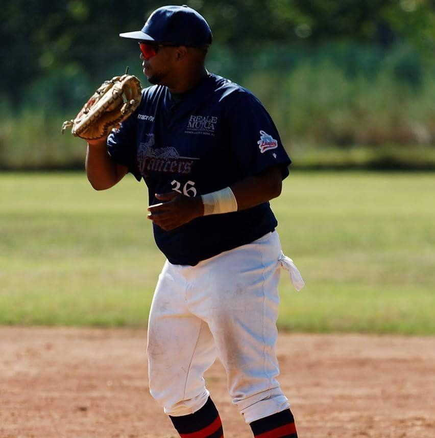
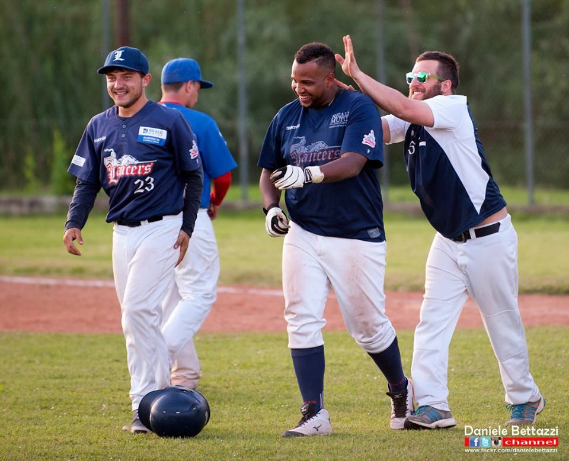

Quando il baseball giocato si ferma inizia il periodo dell’anno nel quale la società e lo staff costruiscono la stagione che verrà.
I Lancers hanno voglia di fare bene, anzi meglio nel campionato di Serie B che li attende e nel quale possiamo toglierci qualche soddisfazione, come ci ha dimostrato il 2016.
La squadra Senior adesso ha un anno di esperienza in più molto importante, i più giovani si sono misurati con lo scalino che divide la categoria che abbiamo lasciato nel 2015 con l’attuale.
Purtroppo, nel frattempo salutiamo Dario Graceffa un amico, prima che compagno, che per motivi personali ha deciso di lasciare momentaneamente il baseball giocato, a lui i compagni e la società fanno i migliori auguri per il futuro.
Parlando di mercato in entrata il DS Ciappi è lieto di confermare un giocatore che si è dimostrato fondamentale nelle ultime due stagioni, sia per la promozione che per l’esordio nella nuova categoria, parliamo ovviamente del nostro compagno e noto Dj Cristopher “Lakry” Diaz, un ragazzo di soli 26 anni ma che vanta già alle spalle diversi campionati di Serie A e B (Arezzo e Padule).

Il mancino di origini dominicano difenderà anche per il prossimo anno il cuscino di prima base, ottimo difensore e battitore di esperienza ha dato un grande contributo (la foto accanto ci ricorda il suo walk-off single contro Cali Roma) e speriamo possa fare anche meglio! Forza Lakry!
Il mercato non si ferma e la società sta valutando diverse situazioni per migliorarsi; siamo certi che presenteremo ai nastri di partenza un roster competitivo composto per la maggioranza da atleti del NOSTRO vivaio, sperando di aggiungere qualche tassello esterno di rilevanza come Diaz.
Intanto la squadra ha iniziato la preparazione invernale presso la palestra del Palazzetto dello Sport, i lanciatori cominceranno un percorso a parte la prossima settimana, la ripresa ufficiale degli allenamenti è prevista per i primi giorni di Gennaio quando potremo contare anche la presenza del Manager Gentilini.
In arrivo bollenti novità dai Lancieri…STAY TUEND!